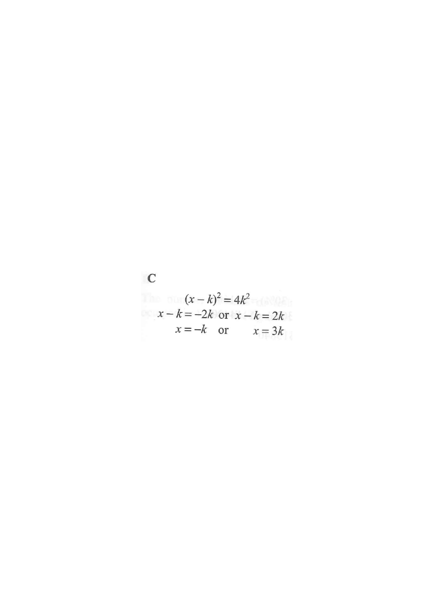

Interactive Figure
Scroll the steps to highlight each stage.
positive root
negative root
factorised form
number line / roots
Question
Let $k$ be a constant. Solve the equation
$x^{2}=9k^{2}$.
- A. $x=3k$
- B. $x=-3k$
- C. $x=3k$ or $x=-3k$
- D. $x=3k$ or $x=3k$

Figure (original exam diagram)
Step-by-step solution
1Write down what is given
Perfect Square\((3k)^{2}=9k^{2}\)Recognising \(9k^{2}\) as \((3k)^{2}\) turns the right-hand side into a single square.
The equation is
$$x^{2}=9k^{2}.$$
Here $k$ is a constant (a fixed number), so the right-hand side is just a number; the unknown is $x$.
Hint: $9k^{2}=(3k)^{2}$, a perfect square — this is the key observation.
2Bring everything to one side & factorise
Difference of Two Squares\(a^{2}-b^{2}=(a-b)(a+b)\)With \(a=x\) and \(b=3k\), the equation \(x^{2}-(3k)^{2}=0\) factorizes immediately.
$$x^{2}-9k^{2}=0$$
This is a difference of two squares:
$$x^{2}-(3k)^{2}=0 \quad\Longrightarrow\quad (x-3k)(x+3k)=0$$
Hint: $a^{2}-b^{2}=(a-b)(a+b)$ with $a=x$ and $b=3k$.
3Apply the zero-product property
Zero Product Property\(AB=0\ \Rightarrow\ A=0\ \text{or}\ B=0\)The product \((x-3k)(x+3k)\) is zero, so one of the two factors must vanish.
A product is zero only if at least one factor is zero:
$$x-3k=0 \quad\text{or}\quad x+3k=0$$
So
$$x=3k \quad\text{or}\quad x=-3k$$
Hint: A quadratic always gives two roots — do not stop after the first one.
4Check on a number line
The two roots $\pm 3k$ are symmetric about $0$:
$$\underbrace{-3k}_{\text{root 1}}\;\longleftarrow\;0\;\longrightarrow\;\underbrace{3k}_{\text{root 2}}$$
Both values satisfy $x^{2}=9k^{2}$ because squaring removes the sign:
$(3k)^{2}=9k^{2}$ and $(-3k)^{2}=9k^{2}$. ✔
Hint: Always substitute back to verify — a "sign" mistake is the most common trap.
Answer: C — $x=3k$ or $x=-3k$
PRACTICESimilar question — try it yourself
Question. Let \(m\) be a constant. Solve the equation \(4x^{2}=25m^{2}\).
Show the worked solution
Step 1. Bring everything to one side and spot the squares: \(4x^{2}-25m^{2}=0\), where \(4x^{2}=(2x)^{2}\) and \(25m^{2}=(5m)^{2}\).
Step 2. Difference of two squares: \((2x-5m)(2x+5m)=0\).
Step 3. Zero product property: \(2x-5m=0\) or \(2x+5m=0\).
Step 4. Hence \(x=\dfrac{5m}{2}\) or \(x=-\dfrac{5m}{2}\). Check \(x=\dfrac{5m}{2}\): \(4\left(\dfrac{5m}{2}\right)^{2}=25m^{2}\) ✓.
Answer: \(x=\dfrac{5m}{2}\) or \(x=-\dfrac{5m}{2}\)